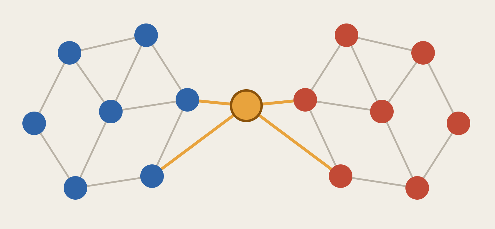

Collective behaviour · a lecture
You are the flock
Each of you is one animal in a shared field. You see only the neighbours the experiment allows. The pattern is measured afterwards.
Fifteen students share that field. On screen, the animal is a fox.
First person, sixteen seconds. The foxes face the way they are travelling. Scarves are off in this clip. Scroll the two comparisons below.
A patch nobody was shown
Together, the search finishes: all 13 are inside by 44 seconds. Alone, 10 of 13 have arrived at 122 seconds. Scroll moves the paths. Hold the bar to steer.
Who could see whom

Echo chambers
With a bridge, order rises from about 0.3 to 1. Without a bridge, it stays near 0.2. Φ is 0 when headings are random and 1 when they agree. Scroll moves the paths. Hold the bar to steer.
What the class runs
Each button on the teacher’s screen starts that experiment.
| The point | Source | |
|---|---|---|
| 1A Entrainment | Follow a marching swarm. | Vicsek et al., 1995; Buhl et al., 2006 |
| 1B Handoff | The swarm vanishes. Does the march hold? | Buhl et al., 2006 |
| 2 Bifurcation | Two streams. A small angle is averaged. A large angle stays two headings. | Couzin et al., 2005 |
| 3 Informed | Three of the fifteen privately see a beacon. The rest are not told the direction. | Couzin et al., 2005 |
| 4A Echo chambers | Blue sees blue, red sees red. One bridge sees both. | The classroom network |
| 4B Neighbours | The k nearest, however far, or only those inside a fixed radius. | Ballerini et al., 2008 |
| 5 Looming | One student sees the threat. The others see a neighbour bolt. | A looming stimulus, in the locust collision-detector tradition |
| 6 Patch | A hidden patch slows you down. Together you can see each other. Alone you see no one. | Berdahl et al., 2013 |
| 7 Stop and go | An automatic pause just before a bump. | Ariel et al., 2014; Bazazi et al., 2008 |
| 8 Avoid bumps | Contact costs. Order can come from not hitting each other. | Bazazi et al., 2008; Romanczuk et al., 2009 |
Run the class
Needs Node.js 20 or newer.
git clone https://github.com/pvnkmrksk/classroom-agents.git
cd classroom-agents
npm install
npm startStudents open http://localhost:3000 and join with matrex. The teacher opens http://localhost:3000/admin with matrexvr.
A live class needs this server on a machine the students can reach. This page only plays the saved examples.
Click to look around. WASD or the arrow keys move.
References
- Vicsek, T., Czirók, A., Ben-Jacob, E., Cohen, I. and Shochet, O. Novel type of phase transition in a system of self-driven particles. Physical Review Letters 75, 1226 (1995). doi:10.1103/PhysRevLett.75.1226
- Buhl, J., Sumpter, D. J. T., Couzin, I. D., Hale, J. J., Despland, E., Miller, E. R. and Simpson, S. J. From disorder to order in marching locusts. Science 312, 1402–1406 (2006). doi:10.1126/science.1125142
- Couzin, I. D., Krause, J., Franks, N. R. and Levin, S. A. Effective leadership and decision-making in animal groups on the move. Nature 433, 513–516 (2005). doi:10.1038/nature03236
- Ballerini, M., Cabibbo, N., Candelier, R., Cavagna, A., Cisbani, E., Giardina, I., Lecomte, V., Orlandi, A., Parisi, G., Procaccini, A., Viale, M. and Zdravkovic, V. Interaction ruling animal collective behavior depends on topological rather than metric distance. PNAS 105, 1232–1237 (2008). doi:10.1073/pnas.0711437105
- Berdahl, A., Torney, C. J., Ioannou, C. C., Faria, J. J. and Couzin, I. D. Emergent sensing of complex environments by mobile animal groups. Science 339, 574–576 (2013). doi:10.1126/science.1225883
- Ariel, G., Ophir, Y., Levi, S., Ben-Jacob, E. and Ayali, A. Individual pause-and-go motion is instrumental to the formation and maintenance of swarms of marching locust nymphs. PLOS ONE 9, e101636 (2014). doi:10.1371/journal.pone.0101636
- Bazazi, S., Buhl, J., Hale, J. J., Anstey, M. L., Sword, G. A., Simpson, S. J. and Couzin, I. D. Collective motion and cannibalism in locust migratory bands. Current Biology 18, 735–739 (2008). doi:10.1016/j.cub.2008.04.035
- Romanczuk, P., Couzin, I. D. and Schimansky-Geier, L. Collective motion due to individual escape and pursuit response. Physical Review Letters 102, 010602 (2009). doi:10.1103/PhysRevLett.102.010602